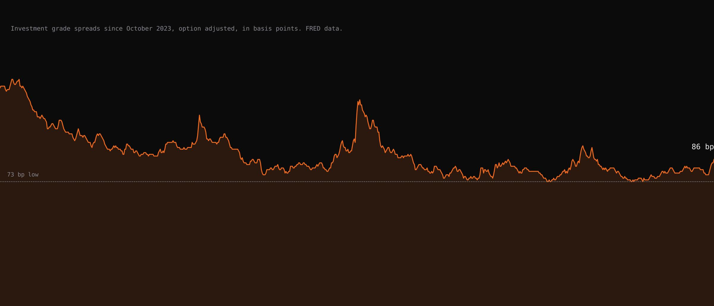

Projects.

These projects cover the parts of the work of a credit analyst, a syndicate desk and a debt capital markets team that I can do with public data. They include five DCF models with a credit comparison, a study of green bond pricing, a tender offer tracker, a score for the new issue window and a test of whether Fed liquidity helps time the market.
Research, tools and models
 Media DCF models and credit compsFive media companies valued on a single template and then compared as credits on leverage, coverage, equity cushion and spread.6.9xSkydance net leverage, against a 3.0x target that cash flow alone does not reach
Media DCF models and credit compsFive media companies valued on a single template and then compared as credits on leverage, coverage, equity cushion and spread.6.9xSkydance net leverage, against a 3.0x target that cash flow alone does not reach Green bond pricingA study of whether green bonds price tighter at new issue than conventional bonds from the same issuer, based on 153 matched pairs.2.4 bpsaverage gap at new issue, which is not statistically significant
Green bond pricingA study of whether green bonds price tighter at new issue than conventional bonds from the same issuer, based on 153 matched pairs.2.4 bpsaverage gap at new issue, which is not statistically significant Tender TrackerA daily tracker of bond tender and exchange offers that reads SEC filings and newswires and records the terms and caps of each offer.9 in 10offer types and dates read correctly on filings the rules had not seen
Tender TrackerA daily tracker of bond tender and exchange offers that reads SEC filings and newswires and records the terms and caps of each offer.9 in 10offer types and dates read correctly on filings the rules had not seen Morning Market DashboardA daily score for whether the new issue window is open, built from the inputs a syndicate desk reviews before a launch.6 inputsVIX, MOVE, IG and HY spreads, futures, spread range
Morning Market DashboardA daily score for whether the new issue window is open, built from the inputs a syndicate desk reviews before a launch.6 inputsVIX, MOVE, IG and HY spreads, futures, spread range Fed Liquidity LabA test of whether the Fed's net liquidity is a useful signal for reducing risk, run on public data against buy and hold.6.0%a year for the rules, against 8.1% for buy and hold
Fed Liquidity LabA test of whether the Fed's net liquidity is a useful signal for reducing risk, run on public data against buy and hold.6.0%a year for the rules, against 8.1% for buy and hold- Mill City ConsultingResearch and due diligence for a duckpin bowling alley that has operated since 1931.